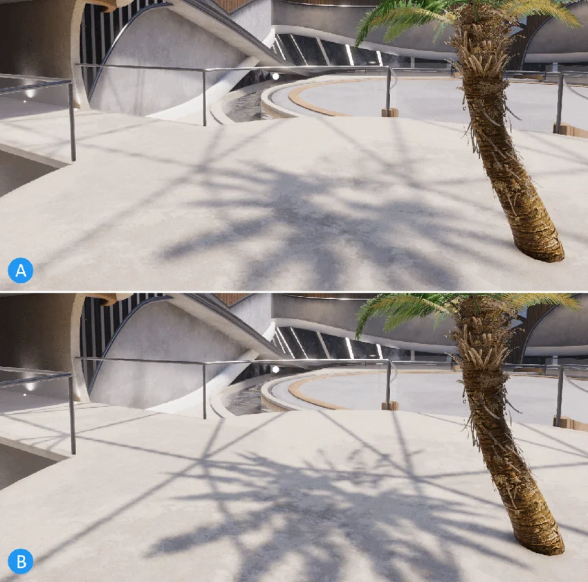

This page describes how to configure the shadow resolution of the directional light and the additional lights.
To set the resolution of shadows from the main light, select URP Asset > Lighting > Main Light > Shadow Resolution.
Unity spreads the shadow map over the area defined by the Max Distance property. The higher the value, the lower the pixel density of the shadow map. Set the Max Distance property in URP Asset > Shadows > Max Distance.
For example, the following illustration shows that reducing the Max Distance value from 40 to 10 lets you use a lower resolution shadow map (1024 pixels instead of 2048 pixels) and achieve higher shadow quality in the area close to the camera. Cascade count value is 1.

In URP, point lights and spot lights are called additional lights.
Set the size of these atlases in your Unity project’s URP asset. The atlas size determines the maximum resolution of additional light shadows in your scene.
URP renders all real-time shadows for a frame using one common shadow map atlas for all spot lights and point lights in your scene, and another shadow map atlas for directional lights.
For example, an atlas of size 1024 × 1024 can fit:
To make sure that the resolution URP uses for a specific additional light shadow does not get lower than a specific value, consider the number of shadow maps required in the scene, and select a big enough shadow atlas resolution.
Consider the following example:
A scene has four spot lights and one point light.
Each shadow map resolution must be at least 256 x 256 pixels.
In this example Unity needs to render ten shadow maps (one for each spot light, and six for the point light), each with a resolution of 256 x 256 pixels.
A shadow atlas of 512 x 512 pixels would not be enough, because it can contain only four maps of 256 x 256 pixels. The application requires a shadow atlas of 1024 x 1024 pixels, which can contain up to sixteen maps of 256 x 256 pixels.